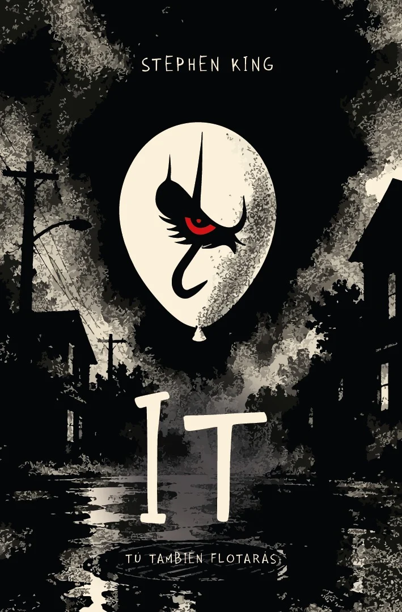

← Experiencia Inmersiva
Folio · It
Experiencia de realidad aumentada del proyecto Folio, basada en «It». Reconoce una imagen con la cámara y superpone contenido en 3D sobre ella.
Pruébala aquí
Experiencia interactiva dentro de la página.
 Experiencia AR · It
Experiencia AR · It
Se abrirá aquí mismo y te pedirá permiso para usar la cámara.
- Inicia la experiencia
Pulsa el botón y acepta el permiso de la cámara. - Apunta a la imagen marcadora
La experiencia reconoce una imagen concreta: muéstrala en otra pantalla o impresa, o escanea el QR con tu teléfono. - Mira la realidad aumentada
Mueve el teléfono para ver el contenido sobre la imagen.

La cámara necesita permiso del navegador. En la mayoría de teléfonos funciona mejor abriendo la experiencia en pestaña nueva.
Explora sin cámara
Mueve el cursor (o el dedo) sobre la portada y abre las tarjetas, igual que en la experiencia AR.
Toca la portada para repetir el video.